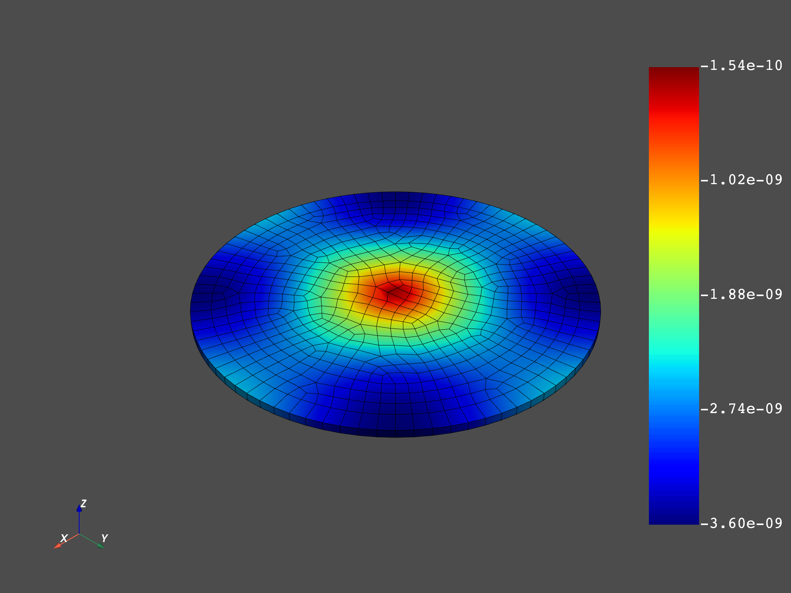
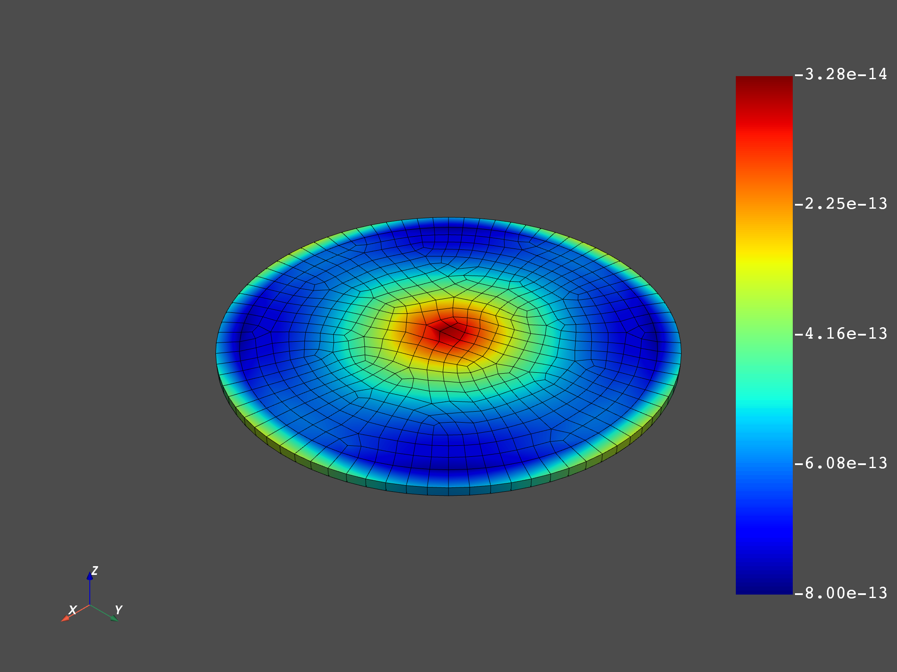

Note
Click here to download the full example code
Exchange Data Between Servers¶
In this example, 2 dpf’s servers will be started and a workflow will be created with a part on both servers. This example opens the possibility for a user to read data from a given machine and transform this data on another without any more difficulties than working on a local computer
from ansys.dpf import core as dpf
from ansys.dpf.core import examples
from ansys.dpf.core import operators as ops
Create 2 servers¶
Here the 2 servers are started on the local machine with start_local_server but, if the user has another server, he can connect on any dpf’s server on the network via: connect_to_server
# the as_global attributes allows to choose wether a server will be stored
# by the module and used by default
# Here, we choose the 1st server to be the default
server1 = dpf.start_local_server(as_global=True)
server2 = dpf.start_local_server(as_global=False)
# Check that the 2 servers are on different ports
print(server1.port, server2.port)
Out:
50065 50066
Send the result file¶
Here, the result file is sent in a temporary dir of the first server This file upload is useless in our case, since the 2 servers are locals
file = examples.complex_rst
file_path_in_tmp = dpf.upload_file_in_tmp_folder(file)
Create a worflow on the first server¶
Create the model
model = dpf.Model(file_path_in_tmp)
# Read displacement
disp = model.results.displacement()
disp.inputs.time_scoping(len(model.metadata.time_freq_support.time_frequencies))
Create a worflow on the second server¶
# Change the cartesian coordinates to cylindrical coordinates cs
coordinates = ops.geo.rotate_in_cylindrical_cs_fc(server=server2)
# Create the cartesian coordinate cs
cs = dpf.fields_factory.create_scalar_field(12,server=server2)
cs.data =[1,0,0,0,1,0,0,0,1,0,0,0]
coordinates.inputs.coordinate_system(cs)
# choose the radial component to plot
comp = dpf.operators.logic.component_selector_fc(coordinates,0,server=server2)
Pass data from on server to another¶
fc_disp = disp.outputs.fields_container()
fc_copy = fc_disp.deep_copy(server=server2)
mesh_copy = model.metadata.meshed_region.deep_copy(server=server2)
#give a mesh to the field
fc_copy[0].meshed_region=mesh_copy
fc_copy[1].meshed_region=mesh_copy
coordinates.inputs.field(fc_copy)
Plot the output¶
out = comp.outputs.fields_container()
#real part
mesh_copy.plot(out.get_field({"complex":0}))
#imaginary part
mesh_copy.plot(out.get_field({"complex":1}))
- 
- 
Out:
[(0.01577507996330582, 0.01577507996330582, 0.01587507996330582),
(0.0, 0.0, 0.0001),
(0.0, 0.0, 1.0)]
Total running time of the script: ( 0 minutes 4.982 seconds)